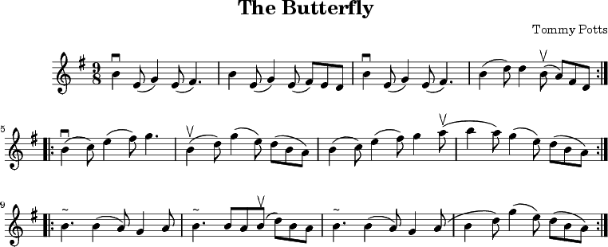

$ ./filters/music2png.py --help
»Home
»a2x
»FAQ
Music Filter
The AsciiDoc distribution includes a Music Block filter that translates music in LilyPond or ABC notation to standard classical notation in the form of a trimmed PNG image which is automatically inserted into the AsciiDoc output document (see the examples below).
Actually the filter (./filters/music2png.py) can be used outside AsciiDoc to convert LilyPond or ABC music files to PNG images. Execute the following command to see how to use it:
The Music Filter can be used as a model for filters that convert a block of text into a file that is linked or embedded into the AsciiDoc output document.
Example 1: Music Block containing ABC notation
This Music Block:
[music,music1.png] --------------------------------------------------------------------- T:The Butterfly R:slip jig C:Tommy Potts H:Fiddle player Tommy Potts made this tune from two older slip jigs, H:one of which is called "Skin the Peelers" in Roche's collection. H:This version by Peter Cooper. D:Bothy Band: 1975. M:9/8 K:Em vB2(E G2)(E F3)|B2(E G2)(E F)ED|vB2(E G2)(E F3)|(B2d) d2(uB A)FD:| |:(vB2c) (e2f) g3|(uB2d) (g2e) (dBA)|(B2c) (e2f) g2(ua|b2a) (g2e) (dBA):| |:~B3 (B2A) G2A|~B3 BA(uB d)BA|~B3 (B2A) G2(A|B2d) (g2e) (dBA):| ---------------------------------------------------------------------
Renders:

Example 2: Music Block containing LilyPond notation
This example contains LilyPond musical markup, it uses the link attribute so you can click on the music image to display the source notation. The music2.ly source file is automatically created and retained by the music2png.py filter when the -m option is used.
["music", "music2.png", "ly", link="music2.ly"]
---------------------------------------------------------------------
\version "2.10.0"
\paper {
ragged-right = ##t
}
{
\time 3/4
\clef bass
c2 e4 g2. f4 e d c2 r4
}
---------------------------------------------------------------------
Renders:
|
|
If you get an error processing the above example it may be that it is not compatible with your version of LilyPond. Use the LilyPond convert-ly(1) utility to update the source to the version that you are using. |
Using the Filter
Insert a delimited Music Block containing valid ABC notation into your AsciiDoc document:
-
The Music Block delimiter is the word music followed by four or more tilde characters.
-
The Music Block attribute list must contain a file name for the PNG output image file followed by the input format (either abc for ABC or ly for LilyPond). If the format is omitted ABC notation is assumed.
-
The filter invokes music2png with the -m option so that music images will only be regenerated if the block content has changed.
-
The optional named block attributes link, width and height are also available (see Image macro attributes in the AsciiDoc User Guide).
Limitations
-
The asciidoc(1) output file cannot be - (stdout), you must output to a named file.
-
If the music image file is linked to the output document then the image file name in the Music Block attribute list should be a relative path name relative to the AsciiDoc output file.
Installation
In addition to AsciiDoc you will need to have installed:
-
LilyPond (most Linux distributions include this package).
-
ImageMagick (most Linux distributions include this package).
Test the music filter it by converting the test file to HTML with AsciiDoc:
$ asciidoc -v ./filters/music-filter-test.txt $ firefox ./filters/music-filter-test.html &
The filter was developed and tested on Xubuntu Linux using LilyPond 2.10.5 and ImageMagick 6.2.4.
|
|
The filter does not work with LilyPond 2.2.6 because it did not generate the requested output file name correctly (2.6.3 does not have a problem). |